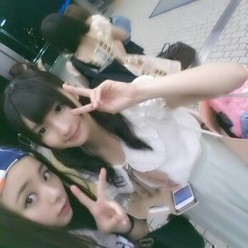

皆さ〜ん ☆
今日も１日おつかろってぃ〜ん \(^ ^)/
Rottyです！
今日は わたくし久しぶりのOFF
でしたぁ〜( ＾∀＾)
お家でまったり過ごさせて
頂きました〜 ！！
3回ほど 近所へちょっと
出ましたけどねん♪
明日の全国握手会のために
体力温存できたかな！？
明日の握手会のペアは
初の まなったん♪とです！
真夏よろちくんくん。
いつもメンバーに
いじられてるんで
初めてそれを真横で体感できる
楽しみや(〃▽〃)
体感？笑
なんかちょっと言葉
間違ってるかもしらんけど
許してにゃん=´▽`=笑
真夏、 blogに丁寧に
まひろのこととか書いてくれてて
サンキューだよ(*´ω｀*)
明日は皆さんよろしく
お願いします！！！
そんな皆さんに
しちゅもんだよ〜( ´∀｀)
『夏に食べたい料理は
何ですかぁ〜(;・д・)★？』
冷たいものもあるけど
暑いときこそ 熱いものとか
ゆうじゃんっ！？
是非 明日そーゆー話とかも
できたら楽しいなぁ〜(*^^*)
っと、思いまとぅ.
８月は夏カレーしたいなん。ぃやん笑
さゆにゃんと
はいチーズ☆

〜ちょぃとしちゅもん返し〜
☆幼虫あれって焼いてる？
ゆでてんの？チーン？
★焼いてなかった。
ゆでたんやと思う！
☆ラジオの聞き方分かった？
★結局まだためしてないや=´ω`= てへっ/
☆なんつっ亭って知ってる？
★今調べてみたよぉ〜
ラーメン屋かなん^^？
おやすみなさい... 皆
大好きだよ(〃_〃)
のし.